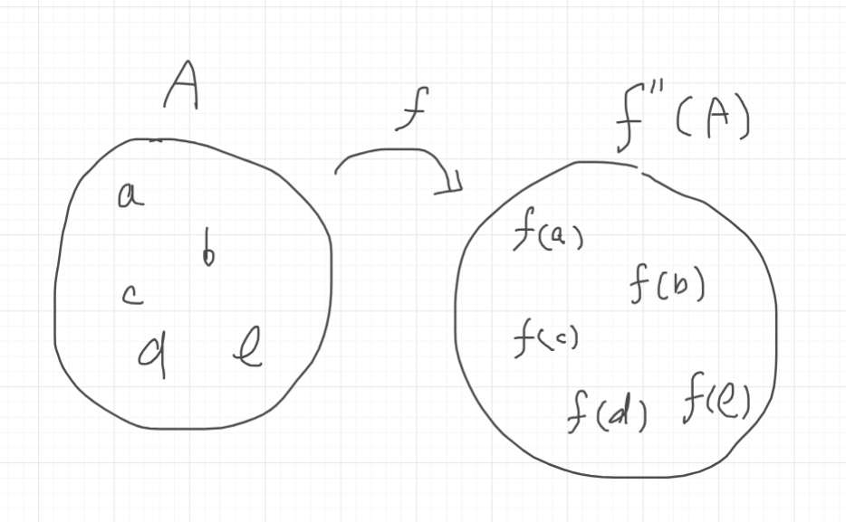

この公理図式も内包性公理図式と同様，無限個の公理からなります． この公理は，式\(\phi (x,y,...)\)が写像(関数と同じものと思っていい)\(y=f(x,...)\)と同じものだとみなせるとき集合の元を写像で写したものを集めた集合が作れるというものです． 写像とみなせるということはもとの集合のそれぞれの元に対してある集合が一意に定まるということです． \(A\)と\(y=f(x,...)\)とみなせる式\(\phi(x,y,...)\)によって得られる集合を\(\{f(x)|x \in A\}\)や\(f''A\)のように表します． 内包性公理図式と合わせて\(\{f(x)|x \in A \land \psi \}\)のように表記することもあります．
